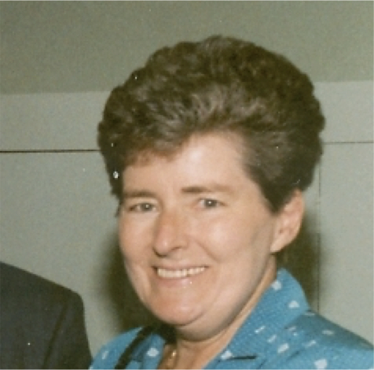
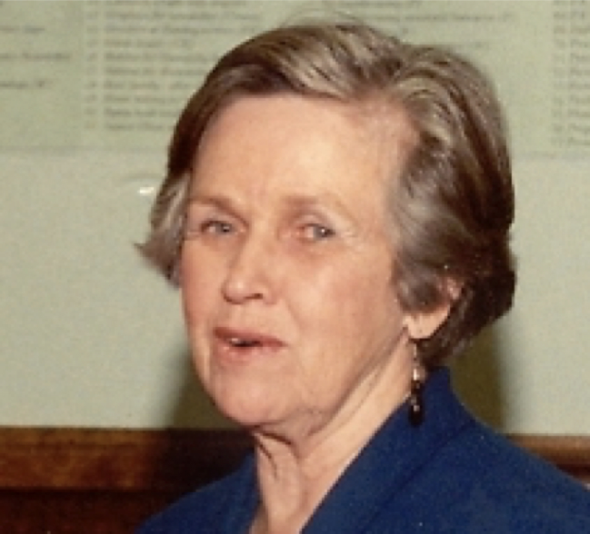

-1-MasterItem.svg)
Stories of Westminster United Church & its People / Page
190
Table
of Contents
There are many in our recent history that have been in the forefront
of leadership in Westminster — we continue to remember Betty Halstead
(left) and her support of Refugees. There is record by a refugee of Betty’s work —
“Betty Halstead was in the heart of our efforts. Hers were the most difficult
tasks,
and she did them with great joy and enthusiasm. Betty was a true leader, with
always positive approach, giving encouragement when needed, taking initiative
when needed, breaking through cultural differences when needed.” There is also
a choral scholarship in Betty’s name here at Westminster.
And the work of Phyllis Reader and International Hope. Phyllis has worked
tirelessly to collect
and distribute surplus medical supplies to developing countries from Manitoba
sources.
And Christine McKee who Tom Carter, former Institute of Urban Studies
(University of Winnipeg)
Director and Canada Research Chair in Urban Change & Adaptation, shared his admiration for
McKee by way of written message. “Christine understood cities and she was a strong advocate
of comprehensive planning and revitalization of the inner city. She was also a
very strong advocate
for the more marginalized in society. Her tireless work for better quality of
life for those in the inner
city was part of her strong commitment to planning equity.” She was an impetus for the Westminster
Housing Foundation and the work that continues today to provide adequate housing
for families in the area around this church.
Another to mention, was Lorraine Sweatman (left). She and Alan were
frequent attendees of the Sunday church Service, and Dick and I regularly
shared comments with them about the sermon. She served on many committees
and was chair of the board. I found this note, actually in Isabel Auld’s papers,
acknowledging the work she had done organizing a fellowship and fashion,
in 1988, which generated almost $1,000.
Isabel Auld, is another member to highlight and acknowledge her contribution to
the Church
and to the community. She died in March 2016 She served as chair of the Board of
Westminster,
and was active on many committees and belonged to a Circle. Yet, somehow, she
managed
Westminster’
s
Women of NOte

